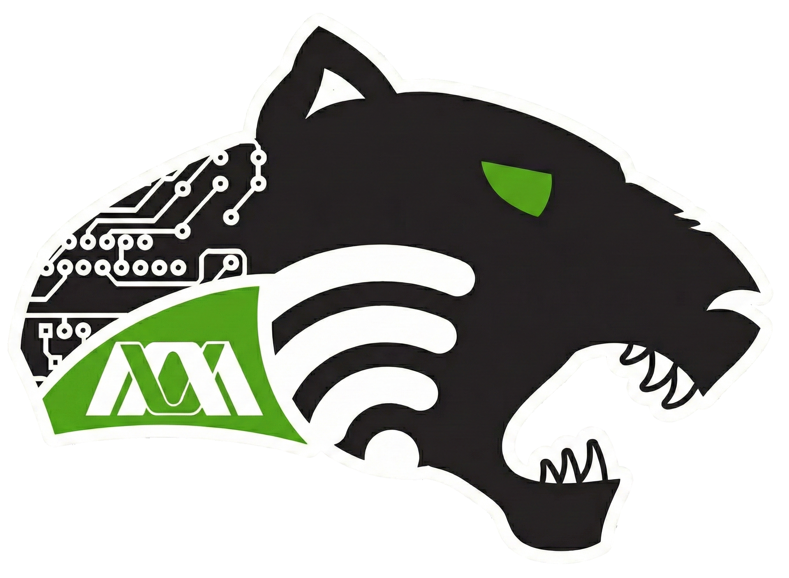

SDR - UAMI
Grupo de Investigación y Desarrollo de Redes Comunitarias
El grupo SDR de la Universidad Autónoma Metropolitana Iztapalapa (UAMI), SDR-UAMI, ha contribuido con proyectos para proveer infraestructura y aplicaciones en el ámbito de redes comunitarias. Nuestro objetivo es dar alternativas de conectividad inalámbrica a nuestra comunidad universitaria y sus alrededores, así como a comunidades indígenas con las que ya se ha trabajado en otros proyectos y que no tienen la posibilidad de tener Internet o que aun existiendo no es accesible para todos. Por ejemplo, la IntraNet Comunitaria UAMI, surge a partir de las necesidades que se tienen de conectividad no solo en la UAMI sino en todo México. Este proyecto incluye contenido digital para la comunidad UAMI y sirve como base para desarrollar réplicas en comunidades alejadas, como en algunas comunidades indígenas donde ya se han impartido programas de capacitación e implementación de esta clase de redes. El objetivo primordial de la intranet es generar contenido digital para los habitantes y que sea creado por los habitantes, por lo que se han hecho manuales y tesis donde se explica el montaje y los aspectos técnicos de toda la IntraNet para que la misma comunidad pueda mantener la red entre ellos. Actualmente se está desarrollando un sistema modular (MosyNetl) basado en software de código abierto y hardware libre de bajo costo con el propósito de contribuir a la disminución de la brecha digital no sólo con la tecnología generada al crear un dispositivo modular de interconexión, sino fomentando la apropiación tecnológica por parte de las comunidades al generar interés por el uso, modificación y desarrollo de IntraNets independientes de Internet, que les permitan compartir contenidos locales.
El grupo SDR-UAMI desarrolla proyectos de infraestructura y aplicaciones para redes comunitarias, con el objetivo de ofrecer alternativas de conectividad inalámbrica a la comunidad universitaria y a comunidades indígenas con acceso limitado o inexistente a Internet. Entre sus iniciativas destaca la IntraNet Comunitaria UAMI, una plataforma de contenidos digitales creada para la comunidad y por la comunidad. Este proyecto sirve como modelo replicable en zonas alejadas, promoviendo la capacitación y la autonomía tecnológica mediante manuales y documentación técnica que facilitan su mantenimiento local. Actualmente, SDR-UAMI desarrolla MosyNetl, un sistema modular basado en software de código abierto y hardware libre de bajo costo. Su propósito es reducir la brecha digital mediante redes locales independientes de Internet, fomentando la apropiación tecnológica y el intercambio de contenidos dentro de las comunidades.
Encuentra más información, guías y conferencias sobre nuestras redes comunitarias en en el canal oficial.
Contenido de Video y Tutoriales